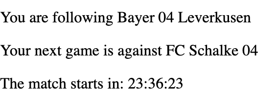

Goalent Implementation
Versioning
| Last Edited By | Date | Version |
| Boris Pavlov dev@goalent.com |
10.06.2020 | 0.1.0 |
| Boris Pavlov dev@goalent.com |
11.06.2020 | 0.1.1 |
| Jens Klingsporn dev@goalent.com |
09.07.2020 | 0.2.0 |
| Boris Pavlov dev@goalent.com |
10.07.2020 | 0.2.1 |
| Jens Klingsporn dev@goalent.com |
02.12.2020 | 0.2.2 |
Introduction
Goalent provides you with a web application in which you can view an entire football match in a gamified form within your own application. In order to achieve this, you would need to do the following three things:
- Get a match id from our servers, representing the next available match to be played in the web app
- Use that match id to start the web app within an iFrame, when the match starts (or if the match is already running)
- Please provide us with the domain name that you will be implementing the iFrame in, in order to whitelist the API requests to our servers.
Getting the Next Available Match for Your Team
Your developer account is associated to an api token which is bound to a specific team. The current URL to fetch the next available match will be defined as:
var url = https://app.goalent.io/getNextMatch?token={token}
Where token is provided to you separately by:
Please note that alongside the token you will receive a teamId for your specific team. This information will be useful later on to describe further the details of the game (see Starting the Game below).
In order to start the web application, you would need the correct match id. Please implement the following call to the Rest API to fetch the next available match.
<script>
var matchId = 0;
var startAt = 0;
var myTeamName = "";
var enemyTeamName = "";
window.onload = function() {
fetch(url, {
method: 'GET',
headers:{
'Accept':'application/json',
'Content-Type':'application/json',
}
})
.then(
function(response) {
return response.json();
}
)
.then(
function(data) {
//here "data" is the response json object, containing the match information
matchId = data.matchId;
startAt = data.startTimeUTC;
//here "myTeamId" is the ID of your team provided with the {token}
//the data is structured by home/away team
if (data.homeTeamId == {myTeamId}) {
myTeamName = data.homeTeamName;
enemyTeamName = data.awayTeamName;
} else {
myTeamName = data.awayTeamName;
enemyTeamName = data.homeTeamName;
}
}
)
.catch(function(err) {
console.log('Fetch Error :-S', err);
});
};
</script>
In the above code, the url parameter is the Rest API endpoint to fetch the next match, described above. A response object will be returned defined by the following properties:
{
matchId: integer,
startTimeUTC: integer (timestamp in ms),
homeTeamId: integer,
awayTeamId: integer,
homeTeamName: string,
awayTeamName: string,
homeTeamLogo: string (url of team logo),
awayTeamLogo: string (url of team logo),
}
Is the Match Running?
To determine the state of the received match, please use the startTimeUTC timestamp.
In case of a future game (where startTimeUTC > now), you can display a layer to the user preventing them from joining the game. Please note, that the game iFrame should not be created at this stage, but only when the match is running.
Starting the Game
For a better user experience, the web application iFrame must only be created when the match starts or is already running.
You can continuously check this and display a countdown with a following example:
<div id="teamInfo"></div>
<div id="countdown"></div>
...
<script>
var startAt = 0; // this value is received from the response object (startTimeUTC)
//...
var countdownElement = document.getElementById("countdown");
var x = setInterval(function() {
var now = new Date().getTime();
var remainingTime = Math.round((startAt-now)/1000);
if (remainingTime <= 0) {
//alert the user that they are able to start the game
//or enable/disable the correct elements
} else {
countdownElement.innerHTML = ("<p>" + new Date(remainingTime * 1000).toISOString().substr(11, 8) + "</p>");
teamInfoElement.innerHTML = ("<p>You are following " + decodeURIComponent((homeTeamName).replace(/\+/g, '%20')) + "</p>" + "<p>Your next game is against " + decodeURIComponent((awayTeamName).replace(/\+/g, '%20')) + "</p>");
}
}, 1000);
<script>
The above sample code will produce the following result:

In order to start the game, you must implement an iFrame which would run the application. To correctly build the URL for the iFrame in which the game will run, the matchId parameter needs to be added as a GET parameter called gMatchId:
"https://webview.goalent.io/?sound=[on|off]&gMatchId=" + matchId
Please note that you can also provide a sound parameter which indicates whether the game will start muted or not. Possible values are on or off
Here is a sample scenario which describes how to start the iFrame:
<div id="gameContent">
<Button onclick="createFrame()">Start Game</Button>
</div>
...
<script>
//...
function createFrame() {
var ifrm = document.createElement("iframe");
ifrm.setAttribute("src", "https://webview.goalent.io/?sound=on&gMatchId=" + matchId);
ifrm.style = "position: relative; height: 100%; width: 90%;"; //this is an example iFrame styling setup
document.getElementById("gameContent").replaceWith(ifrm); //replace the content of our target div
}
</script>
In the above example, we are replacing the contents of our target div gameContent with the HTML content of the iFrame, using the createFrame() function.
Once the iFrame is created, the end result should produce a view of the game:

A good implementation might consist of disabling the start button until the game has started.
Testing when there is no upcoming match
When it's the end of a season, the URL for the next match will return an empty json object. For testing purposes you can use our DEV environment:
var url = https://dev-app.goalent.io/getNextMatch?token={token}var url = https://dev-webview.goalent.io/gMatchId={matchId}This environment however won't return the next match for your team, but one of the next upcoming debug matches. A debug match is a match from the past and has been recorded. These kinds of matches only appear during specific time frames between Monday and Friday (CET/CEST):
- 07:15 – 09:15
- 11:15 – 13:15
- 14:15 – 16:15
- 19:15 – 21:15
Troubleshooting
- No next match is returned
- If the API call to get the next match returns an empty result, this usually means that the next match has not been officially scheduled yet. This can happen when it’s the end of a season or some unforeseen circumstances.
- See also: Testing when there is no upcoming match
- Blocked by CORS policy
- The following error might occur if your domain name has not been whitelisted on our servers, please make sure that you have provided us with the correct domain on which the application will be integrated.
Access to fetch at ‘https://app.goalent.io/getNextMatch?token={token}’ from origin ‘http://yourdomain’ has been blocked by CORS policy: Response to preflight request doesn’t pass access control check: No ‘Access-Control-Allow-Origin’ header is present on the requested resource. If an opaque response serves your needs, set the request’s mode to ‘no-cors’ to fetch the resource with CORS disabled.
Example
A full working page example to start the game:
<!DOCTYPE html>
<html>
<head>
<style type="text/css">
html, body {
height: 100%;
margin: 0;
}
#gameContent {
position: fixed;
width: 100%;
height: 90%;
left: 0;
top: 0;
z-index: 10;
overflow: hidden;
}
iframe{
overflow:hidden;
}
</style>
</head>
<body>
<div id="gameContent">
<Button onclick="createFrame()">Start Game</Button>
<div id="teamInfo"></div>
<div id="countdown"></div>
</div>
<script>
var matchId = 0;
function createFrame() {
var ifrm = document.createElement("iframe");
ifrm.setAttribute("src", "https://webview.goalent.io/?sound=on&gMatchId=" + matchId);
ifrm.style = "position: relative; height: 100%; width: 90%;";
document.getElementById("gameContent").replaceWith(ifrm);
}
window.onload = function() {
var countdownElement = document.getElementById("countdown");
var teamInfoElement = document.getElementById("teamInfo");
var x = setInterval(function() {
var now = new Date().getTime();
var remainingTime = Math.round((startAt-now)/1000);
countdownElement.innerHTML = ("<p>The match starts in: " + new Date(remainingTime * 1000).toISOString().substr(11, 8) + "</p>");
teamInfoElement.innerHTML = ("<p>You are following " +decodeURIComponent((homeTeamName).replace(/\+/g, '%20'))+ "</p>" + "<p>Your next game is against " +decodeURIComponent((awayTeamName).replace(/\+/g, '%20'))+ "</p>");
}, 1000);
fetch("https://app.goalent.io/getNextMatch?token={token}", {
method: 'GET',
headers:{
'Accept':'application/json',
'Content-Type':'application/json',
}
})
.then(
function(response) {
return response.json();
}
)
.then(
function(data) {
//here "data" is the response json object, containing the match information
matchId = data.matchId;
startAt = data.startTimeUTC;
//here "myTeamId" is the ID of your team provided with the {token}
//the data is structured by home/away team
if (data.homeTeamId == {myTeamId}) {
myTeamName = data.homeTeamName;
enemyTeamName = data.awayTeamName;
} else {
myTeamName = data.awayTeamName;
enemyTeamName = data.homeTeamName;
}
}
)
.catch(function(err) {
console.log('Fetch Error :-S', err);
});
};
</script>
</body>
</html>